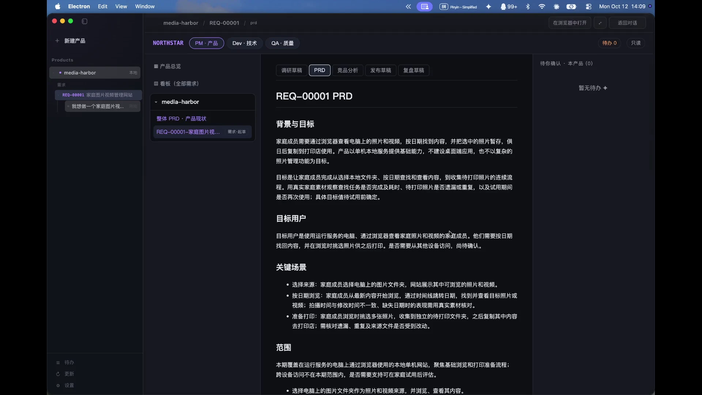
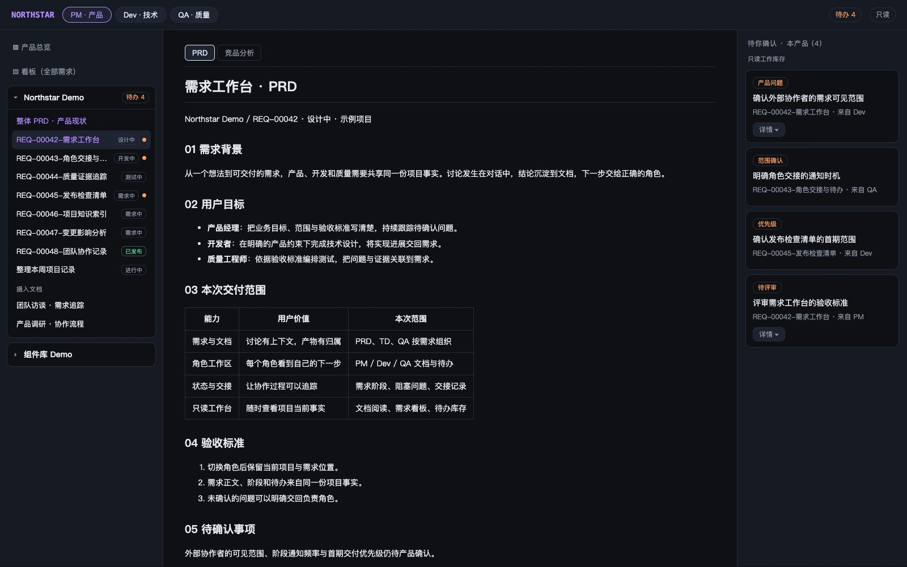

NORTHSTAR DESKTOP / PM WORKFLOW
PM 产品交互流程演示视频
以家庭图片视频网站 media-harbor 为例，
从需求调研、逐项确认、PRD 生成与评审到 PM 签核。

NORTHSTAR AGENT / VIEWER

视频暂时无法播放，可继续查看工作台演示。
ONE CONNECTED WORKFLOW
对话是入口。需求、设计、代码与验收，
是持续积累的工程产物。
澄清目标与范围，
形成清晰的产品需求。
连接需求与实现，
明确方案和影响范围。
围绕确认的方案开发，
保留执行与变更记录。
关联测试与验收目标，
记录缺陷和质量证据。
核对交付与发布条件，
为复盘留下依据。
需求有异议，回到产品确认；测试发现缺陷，交回开发修复。协作不止向前，也能有依据地返回。
BUILT FOR ENGINEERING
Northstar 用明确的职责、流程与证据，
连接模型的理解能力和工程的确定性。
围绕 PM、Dev、QA 的职责组织任务与产物。切换角色时，继续当前需求真正需要处理的工作。
显式状态、流程检查与分级审批，让重要操作满足权限与交付条件，再继续下一步。
将工具执行、文件变更与质量证据关联起来。保留记录，核实产物，而不只依赖一句“已完成”。
通过模块化 Skill、MCP 工具接入与模型适配扩展能力，同时沿用统一的执行与权限边界。
A LITTLE MORE CONTEXT
Northstar 关注完整的研发交付过程：不仅生成代码，还围绕需求分析、技术设计、测试验收与发布确认，组织角色职责、工程产物和下一步工作。
它们是同一工作流中的责任角色。PM 明确产品需求与验收方向，Dev 推进技术设计与实现，QA 建立测试与验收证据。异议与缺陷会交回对应角色处理。
Northstar 以桌面客户端作为主要交互入口。Viewer 是查看项目、需求文档与协作事项的只读工作台；CLI 可用于调试与自动化。本页包含真实 Desktop 会话录像，以及使用示例数据的 Viewer 界面。
Northstar 通过模型适配层、Skill 和 MCP 客户端接入扩展能力。可用模型和工具取决于实际配置；相关工具调用仍经过统一的权限、执行与记录流程。
YOUR NEXT IDEA, ONE STEP CLOSER.
了解 Northstar，关注项目的下一步。